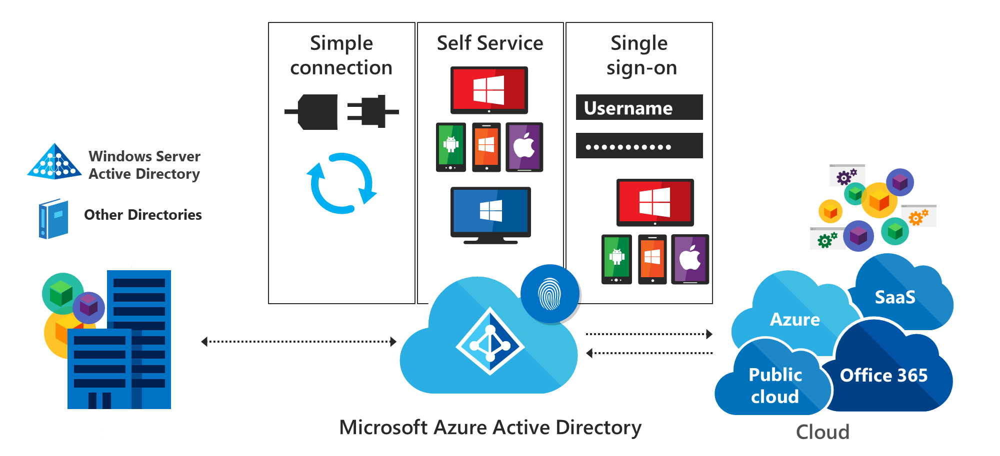
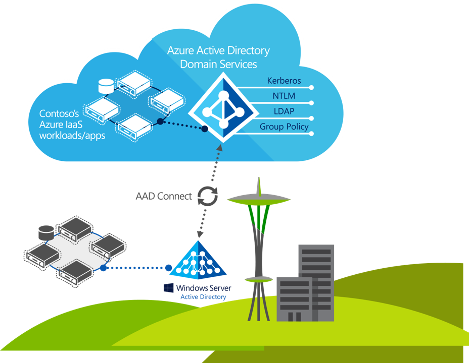

Azure Security AZ-500
AZ-500: Microsoft Certified: Azure Security Engineer Associate#
- Azure AD Identity Management
- Azure Privileged Identity Management(PIM)
- Azure Key Vault(AKV)
- Multi-Factor Authentication(MFA)
- App Registration
- Azure Pplicies
- Azure Blueprints
- Azure locks
- Network Security
- Application Security Groups
- Remote Connectivity
- Just In Time Access
- Azure Firewall
- DDoS Attack Protection
- Understanding Azure Front Door
- Azure Web Application Firewall(WAF)
- Virtual Machine Encryption and Extensions
- Connecting to Linux Virtual Machines
- Microsoft Defender for Cloud
- Securing SQL in Azure
- Azure Sentinel
The Azure security engineer implements, manages, and monitors security for resources in Azure, multi-cloud, and hybrid environments as part of an end-to-end infrastructure. They recommend security components and configurations to protect identity & access, data, applications, and networks.
Responsibilities for an Azure security engineer include managing the security posture, identifying and remediating vulnerabilities, performing threat modelling, and implementing threat protection. They may also participate in responding to security incidents.
Azure security engineers work with architects, administrators, and developers to plan and implement solutions that meet security and compliance requirements.
The Azure security engineer should have practical experience in administration of Microsoft Azure and hybrid environments. The Azure security engineer should have a strong familiarity with compute, network, and storage in Azure, as well as Azure Active Directory, part of Microsoft Entra.
AZ-500: Manage Identity and Access#
Explore how identity is the starting point for all security within your company. Learn to authenticate and authorize users and apps with Azure Active Directory.
Introduction#
Azure Active Directory (Azure AD) is Microsoft’s cloud-based identity and access management service, which helps your employee's sign in and access resources in:
* External resources, such as Microsoft 365, the Azure portal, and thousands of other SaaS applications.
* Internal resources, such as apps on your corporate network and intranet, along with any cloud apps developed by your own organization.
Scenario#
A security engineer uses Azure Active Directory's identity and access management services to execute and facilitate the following tasks:
* Create users, groups, and administrative units to securely access resources and services.
* Configure access to systems to be passwordless.
* Define a strategy for using Azure AD and Azure AD Domain Services to lock down access to your solutions.
Skills measured#
Azure Active Directory is a part of Exam AZ-500: Microsoft Azure Security Engineer. Manage identity and access (30-35%)
* Manage Azure AD identities
* Manage Azure AD directory groups
* Manage Azure AD users
* Manage administrative unit
Learning objectives#
- Compare and contrast Azure AD versus on-premises directory services with Azure AD Domain Services.
- Configure and deploy users, groups, and administrative units to securely access resources in your tenant.
- Deploy a passwordless login solution for your Azure users and resources.
Explore Azure Active Directory features#
Azure Active Directory (Azure AD) is a cloud-based identity and access management service. This service helps employees access external resources, such as Microsoft 365, the Azure portal, and thousands of other software-as-a-service (SaaS) applications. Azure Active Directory also helps them access internal resources like apps on your corporate intranet network, along with any cloud apps developed for your organization.

Who uses Azure AD?#
Azure AD is intended for:
* IT admins: As an IT admin, use Azure AD to control access to your apps and your app resources based on your business requirements. For example, you can use Azure AD to require multi-factor authentication when accessing important organizational resources. You can also use Azure AD to automate user provisioning between your existing Windows Server AD and your cloud apps, including Microsoft 365. Finally, Azure AD gives you powerful tools to automatically help protect user identities and credentials and to meet your access governance requirements.
* App developers: As an app developer, you can use Azure AD as a standards-based approach for adding single sign-on (SSO) to your app, allowing it to work with a user's pre-existing credentials. Azure AD also provides APIs that can help you build personalized app experiences using existing organizational data.
* Microsoft 365, Office 365, Azure, or Dynamics Customer relationship management (CRM) Online subscribers: As a subscriber, you're already using Azure AD. Each Microsoft 365, Office 365, Azure, and Dynamics CRM Online tenant is automatically an Azure AD tenant. You can immediately start to manage access to your integrated cloud apps.
What are the Azure AD licenses?#
Microsoft Online business services, such as Microsoft 365 or Microsoft Azure, require Azure AD for sign-in activities and to help with identity protection. If you subscribe to any Microsoft Online business service, you automatically get Azure AD with access to all the free features.
To enhance your Azure AD implementation, you can also add paid capabilities by upgrading to Azure Active Directory Premium P1 or Premium P2 licenses.
Azure AD paid licenses are built on top of your existing free directory. The licenses provide self-service, enhanced monitoring, security reporting, and secure access for your mobile users.
* Azure Active Directory Free: Provides user and group management, on-premises directory synchronization, basic reports, self-service password change for cloud users, and single sign-on across Azure, Microsoft 365, and many popular SaaS apps.
* Azure Active Directory Premium P1. In addition to the Free features, P1 lets your hybrid users access both on-premises and cloud resources. It also supports advanced administration, such as dynamic groups, self-service group management, Microsoft Identity Manager, and cloud write-back capabilities, which allow self-service password reset for your on-premises users.
* Azure Active Directory Premium P2. In addition to the Free and P1 features, P2 also offers Azure Active Directory Identity Protection to help provide risk-based Conditional Access to your apps and critical company data and Privileged Identity Management to help discover, restrict, and monitor administrators and their access to resources and to provide just-in-time access when needed.
* "Pay as you go" feature licenses. You also get additional feature licenses, such as Azure Active Directory Business-to-Customer (B2C). B2C can help you provide identity and access management solutions for your customer-facing apps.
Which features work in Azure AD?#
After you choose your Azure AD license, you'll get access to some or all of the following features:
| Category | Description | |:***:|***************| | Application management | Manage your cloud and on-premises apps using Application Proxy, single sign-on, the My Apps portal, and Software as a Service (SaaS) apps. | | Authentication | Manage Azure Active Directory self-service password reset, Multi-Factor Authentication, custom banned password list, and smart lockout. | | Azure Active Directory for developers | Build apps that sign in all Microsoft identities, and get tokens to call Microsoft Graph, other Microsoft APIs, or custom APIs. | | Business-to-Business (B2B) | Manages your guest users and external partners while maintaining control over your own corporate data. | | Business-to-Customer (B2C) | Manages your guest users and external partners while maintaining control over your own corporate data. | | Conditional Access | Manage access to your cloud apps. | | Device Management | Manage how your cloud or on-premises devices access your corporate data. | | Domain services | Join Azure virtual machines to a domain without using domain controllers. | | Enterprise users | Manage license assignments, access to apps, and set up delegates using groups and administrator roles. | | Hybrid identity | Use Azure Active Directory Connect and Connect Health to provide a single user identity for authentication and authorization to all resources, regardless of location (cloud or on-premises). | | Identity governance | Manage your organization's identity through employee, business partner, vendor, service, and app access controls. You can also perform access reviews. | | Identity protection | Detect potential vulnerabilities affecting your organization's identities, configure policies to respond to suspicious actions, and then take appropriate action to resolve them. | | Managed identities for Azure resources | Provide your Azure services with an automatically managed identity in Azure AD that can authenticate any Azure AD-supported authentication service, including Key Vault. | | Privileged identity management (PIM) | Manages, controls, and monitors access within your organization. This feature includes access to resources in Azure AD and Azure, and other Microsoft Online Services, like Microsoft 365 or Intune. | | Reports and monitoring | Gain insights into the security and usage patterns in your environment. |
Self-managed Active Directory Domain Services, Azure Active Directory, and managed Azure Active Directory Domain Services#
To provide applications, services, or devices access to a central identity, there are three common ways to use Active Directory-based services in Azure. This choice in identity solutions gives you the flexibility to use the most appropriate directory for your organization's needs.
For example, if you mostly manage cloud-only users that run mobile devices, it may not make sense to build and run your own Active Directory Domain Services (AD DS) identity solution. Instead, you could use Azure Active Directory.

Although the three Active Directory-based identity solutions share a common name and technology, they're designed to provide services that meet different customer demands. At a high level, these identity solutions and feature sets are:
-
Azure Active Directory (Azure AD) - Cloud-based identity and mobile device management that provides user account and authentication services for resources such as Microsoft 365, the Azure portal, or SaaS applications. * Azure AD can be synchronized with an on-premises AD DS environment to provide a single identity to users that works natively in the cloud.
-
Active Directory Domain Services (AD DS) - Enterprise-ready lightweight directory access protocol (LDAP) server that provides key features such as identity and authentication, computer object management, group policy, and trusts. * AD DS is a central component in many organizations with an on-premises IT environment and provides core user account authentication and computer management features.
-
Azure Active Directory Domain Services (Azure AD DS) - Provides managed domain services with a subset of fully compatible traditional AD DS features such as domain join, group policy, LDAP, and Kerberos / New Technology LAN Manager (NTLM) authentication. * Azure AD DS integrates with Azure AD, which can synchronize with an on-premises AD DS environment. This ability extends central identity use cases to traditional web applications that run in Azure as part of a lift-and-shift strategy.
Azure AD DS and self-managed AD DS#
If you have applications and services that need access to traditional authentication mechanisms such as Kerberos or NTLM, there are two ways to provide Active Directory Domain Services in the cloud:
* A managed domain that you create using Azure Active Directory Domain Services (Azure AD DS). Microsoft creates and manages the required resources.
* A self-managed domain that you create and configure using traditional resources such as virtual machines (VMs), Windows Server guest OS, and Active Directory Domain Services (AD DS). You then continue to administer these resources.
With Azure AD DS, the core service components are deployed and maintained for you by Microsoft as a managed domain experience. You don't deploy, manage, patch, and secure the AD DS infrastructure for components like the VMs, Windows Server OS, or domain controllers (DCs).
Azure AD DS provides a smaller subset of features to traditional self-managed AD DS environment, which reduces some of the design and management complexity. For example, there are no AD forests, domains, sites, and replication links to design and maintain.
For applications and services that run in the cloud and need access to traditional authentication mechanisms such as Kerberos or NTLM, Azure AD DS provides a managed domain experience with a minimal amount of administrative overhead.
When you deploy and run a self-managed AD DS environment, you must maintain all of the associated infrastructure and directory components. There's additional maintenance overhead with a self-managed AD DS environment, but you're then able to do additional tasks, such as extending the schema or create forest trusts.
Common deployment models for a self-managed AD DS environment that provides identity to applications and services in the cloud include the following: * Standalone cloud-only AD DS - Azure VMs are configured as domain controllers, and a separate, cloud-only AD DS environment is created. This AD DS environment doesn't integrate with an on-premises AD DS environment. A different set of credentials is used to sign in and administer VMs in the cloud. * Resource forest deployment - Azure VMs are configured as domain controllers, and an AD DS domain that's part of an existing forest is created. A trust relationship is then configured to an on-premises AD DS environment. Other Azure VMs can domain-join this resource forest in the cloud. User authentication runs over a VPN / ExpressRoute connection to the on-premises AD DS environment. * Extend on-premises domain to Azure - An Azure virtual network connects to an on-premises network using a VPN / ExpressRoute connection. Azure VMs connect to this Azure virtual network, which lets them domain-join to the on-premises AD DS environment. * An alternative is to create Azure VMs and promote them as replica domain controllers from the on-premises AD DS domain. These domain controllers replicate over a VPN / ExpressRoute connection to the on-premises AD DS environment. The on-premises AD DS domain is effectively extended into Azure.
The following table outlines some of the features you may need for your organization and the differences between a managed Azure AD DS domain or a self-managed AD DS domain:
| Feature | Azure Active Directory Services (Azure AD DS) | Self-managed AD DS | |*****|****-|***| | Managed service | ✓ | ✕ | | Secure deployments | ✓ | The administrator secures the deployment | | Domain Name System (DNS) server | ✓ (managed service) | ✓ | | Domain or Enterprise administrator privileges | ✕ | ✓ | | Domain join | ✓ | ✓ | | Domain authentication using New Technology LAN Manager (NTLM) and Kerberos | ✓ | ✓ | | Kerberos constrained delegation | Resource-based | Resource-based & account-based | | Custom organizational unit (OU) structure | ✓ | ✓ | | Group Policy | ✓ | ✓ | | Schema extensions | ✕ | ✓ | | Active Directory domain/forest trusts | ✓ (one-way outbound forest trusts only) | ✓ | | Secure Lightweight Directory Access Protocols (LDAPs) | ✓ | ✓ | | Lightweight Directory Access Protocol (LDAP) read | ✓ | ✓ | | Lightweight Directory Access Protocol (LDAP) write | ✓ (within the managed domain) | ✓ | | Geographical-distributed (Geo-distributed) deployments | ✓ | ✓ |
Azure AD DS and Azure AD#
Azure AD lets you manage the identity of devices used by the organization and control access to corporate resources from those devices. Users can also register their personal device (a bring-your-own (BYO) model) with Azure AD, which provides the device with an identity. Azure AD then authenticates the device when a user signs in to Azure AD and uses the device to access secured resources. The device can be managed using Mobile Device Management (MDM) software like Microsoft Intune. This management ability lets you restrict access to sensitive resources to managed and policy-compliant devices.
Traditional computers and laptops can also join Azure AD. This mechanism offers the same benefits of registering a personal device with Azure AD, such as allowing users to sign in to the device using their corporate credentials.
Azure AD joined devices give you the following benefits:
* Single sign-on (SSO) to applications secured by Azure AD.
* Enterprise policy-compliant roaming of user settings across devices.
* Access to the Windows Store for Business using corporate credentials.
* Windows Hello for Business.
* Restricted access to apps and resources from devices compliant with corporate policy.
Devices can be joined to Azure AD with or without a hybrid deployment that includes an on-premises AD DS environment. The following table outlines common device ownership models and how they would typically be joined to a domain:
| Type of device | Device platforms | Mechanism | |****-|**-|*****| | Personal devices | Windows 10, iOS, Android, macOS | Azure AD registered | | Organization-owned device not joined to on-premises AD DS | Windows 10 | Azure AD joined | | Organization-owned device joined to an on-premises AD DS | Windows 10 | Hybrid Azure AD joined |
On an Azure AD-joined or registered device, user authentication happens using modern OAuth / OpenID Connect-based protocols. These protocols are designed to work over the internet, so are great for mobile scenarios where users access corporate resources from anywhere.
With Azure AD DS-joined devices, applications can use the Kerberos and New Technology LAN Manager (NTLM) protocols for authentication, so can support legacy applications migrated to run on Azure VMs as part of a lift-and-shift strategy. The following table outlines differences in how the devices are represented and can authenticate themselves against the directory:
| Aspect | Azure AD-joined | Azure AD DS-joined | |**-|*****-|**********| | Device controlled by | Azure AD | Azure AD Domain Services managed domain | | Representation in the directory | Device objects in the Azure AD directory | Computer objects in the Azure AD DS managed domain | | Authentication | Open Authorization OAuth / OpenID Connect-based protocols | Kerberos and NTLM protocols | | Management | Mobile Device Management (MDM) software like Intune | Group Policy | | Networking | Works over the internet | Must be connected to, or peered with, the virtual network where the managed domain is deployed | | Great for... | End-user mobile or desktop devices | Server VMs deployed in Azure |
If on-premises AD DS and Azure AD are configured for federated authentication using Active Directory Federation Services (ADFS), then there's no (current/valid) password hash available in Azure DS. Azure AD user accounts created before fed auth was implemented might have an old password hash that doesn't match a hash of their on-premises password. Hence Azure AD DS won't validate the user's credentials.
Investigate roles in Azure AD#
Categories of Azure AD roles#
Azure AD built-in roles differ in where they can be used, which fall into the following three broad categories.
* Azure AD-specific roles: These roles grant permissions to manage resources within Azure AD only. For example, User Administrator, Application Administrator, and Groups Administrator all grant permissions to manage resources that live in Azure AD.
* Service-specific roles: For major Microsoft 365 services (non-Azure AD), we have built service-specific roles that grant permissions to manage all features within the service. For example, Exchange Administrator, Intune Administrator, SharePoint Administrator, and Teams Administrator roles can manage features with their respective services. Exchange Administrator can manage mailboxes, Intune Administrator can manage device policies, SharePoint Administrator can manage site collections, Teams Administrator can manage call qualities, and so on.
* Cross-service roles: There are some roles that span services. We have two global roles - Global Administrator and Global Reader. All Microsoft 365 services honor these two roles. Also, there are some security-related roles like Security Administrator and Security Reader that grant access across multiple security services within Microsoft 365. For example, using Security Administrator roles in Azure AD, you can manage Microsoft 365 Defender portal, Microsoft Defender Advanced Threat Protection, and Microsoft Defender for Cloud Apps. Similarly, in the Compliance Administrator role, you can manage Compliance-related settings in the Compliance portal, Exchange, and so on.
The following table is offered as an aid to understanding these role categories. The categories are named arbitrarily and aren't intended to imply any other capabilities beyond the documented Azure AD role permissions.
| Category | Role |
|**-|******************************************************************-|
| Azure AD-specific roles | Application Administrator
Application Developer
Authentication Administrator
Business to consumer (B2C) Identity Experience Framework (IEF) Keyset Administrator
Business to consumer (B2C) Identity Experience Framework (IEF) Policy Administrator
Cloud Application Administrator
Cloud Device Administrator
Conditional Access Administrator
Device Administrators
Directory Readers
Directory Synchronization Accounts
Directory Writers
External ID User Flow Administrator
External ID User Flow Attribute Administrator
External Identity Provider Administrator
Groups Administrator
Guest Inviter
Helpdesk Administrator
Hybrid Identity Administrator
License Administrator
Partner Tier1 Support
Partner Tier2 Support
Password Administrator
Privileged Authentication Administrator
Privileged Role Administrator
Reports Reader
User Administrator |
| Cross-service roles | Global Administrator
Compliance Administrator
Compliance Data Administrator
Global Reader
Security Administrator
Security Operator
Security Reader
Service Support Administrator |
| Service-specific roles | Azure DevOps Administrator
Azure Information Protection Administrator
Billing Administrator
Customer relationship management (CRM) Service Administrator
Customer Lockbox Access Approver
Desktop Analytics Administrator
Exchange Service Administrator
Insights Administrator
Insights Business Leader
Intune Service Administrator
Kaizala Administrator
Lync Service Administrator
Message Center Privacy Reader
Message Center Reader
Modern Commerce User
Network Administrator
Office Apps Administrator
Power BI Service Administrator
Power Platform Administrator
Printer Administrator
Printer Technician
Search Administrator
Search Editor
SharePoint Service Administrator
Teams Communications Administrator
Teams Communications Support Engineer
Teams Communications Support Specialist
Teams Devices Administrator
Teams Administrator |